If you're looking for cool paper crafts for kids that are easy to set up and tons of fun to make, you're in the right place! We've rounded up 25 awesome ideas that range from adorable animals to magical art projects, all perfect for little crafters. Grab some paper and let's get those tiny hands creating!
What You'll Need
Most of these projects use the same basic supplies you probably already have at home:
- Construction paper variety pack
- Washable glue sticks
- Kid-safe scissors
- Markers or crayons
- Pencil
25 Cool Paper Craft Ideas
1. Paper Plate Rainbow
This cheerful rainbow is made by layering strips of colorful paper onto a paper plate half. Kids love choosing their favorite colors and arranging them in an arc. It's a fantastic way to practice color recognition and simple paper art projects for kids don't get much prettier than this. Hang it on the fridge for instant sunshine!
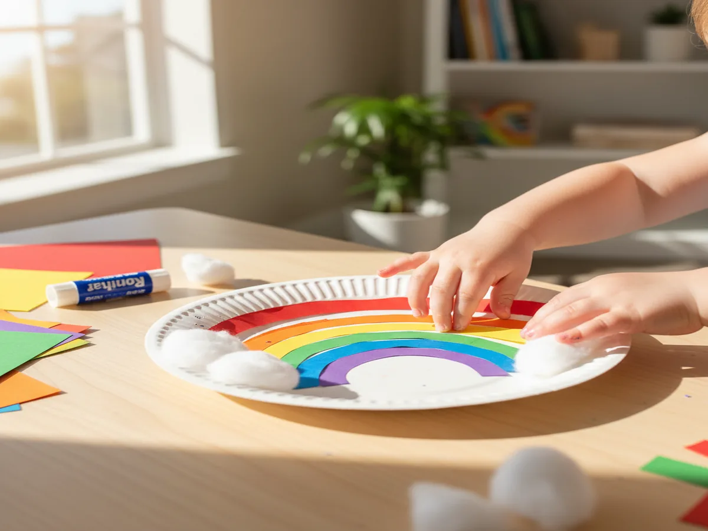
2. Easy Paper Chain Caterpillar
Turn a classic paper chain into a wiggly caterpillar by adding googly eyes and little antennae. This is one of those easy paper craft ideas for toddlers that keeps them busy for a good stretch. Let them pick the colors and watch their caterpillar grow longer and longer!
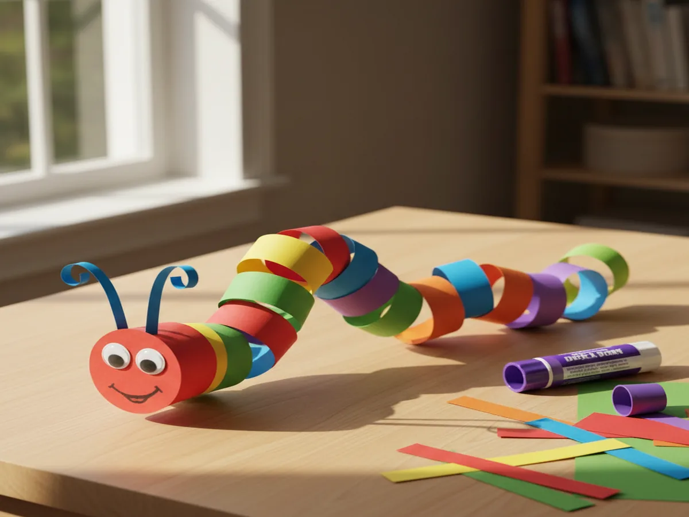
3. Handprint Paper Tree
Trace your little one's hand and arm on brown paper to make a tree trunk, then add colorful torn paper pieces as leaves. It's a sweet keepsake craft that changes with the seasons. Try green leaves for summer or red and orange for fall!
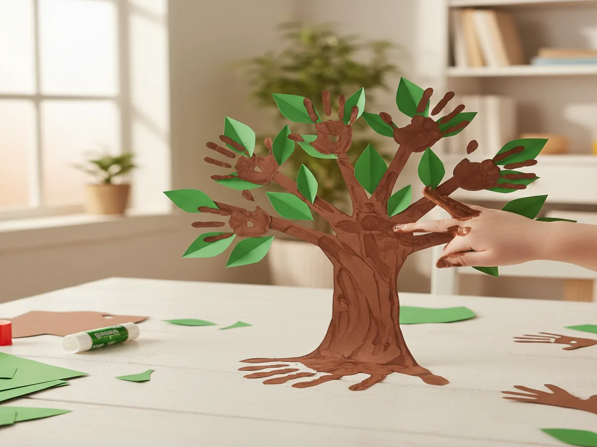
4. Paper Bag Puppet Pals
Brown paper bags become silly characters with just a few snips of paper and some glue. Kids can make animals, monsters, or funny faces. The best part is the puppet show that always follows! This is a craft that doubles as entertainment for hours.
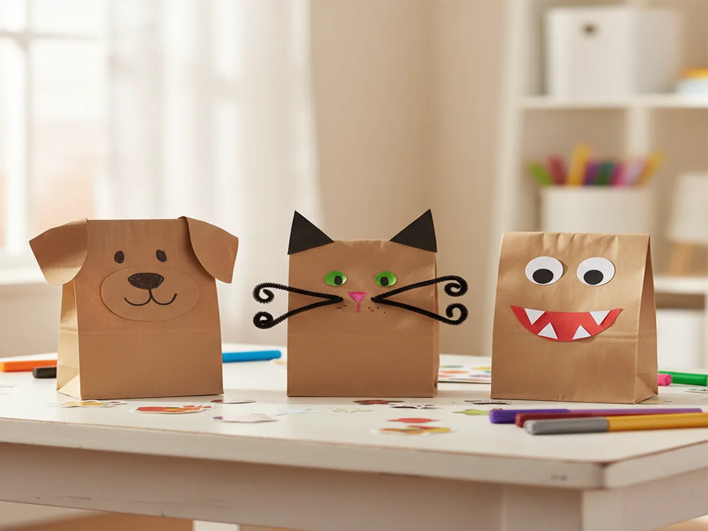
5. Accordion Fold Paper Snake
Two strips of paper folded over each other in an accordion pattern create a bouncy, springy snake. Add a forked tongue and some eyes, and your child has a new slithery friend. This craft is perfect for practicing those fine motor skills. Kids go absolutely wild for the bouncy movement!
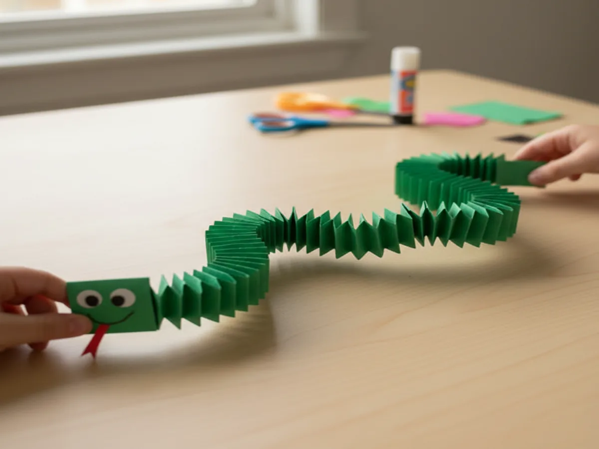
6. Simple Paper Crown
Every kid deserves to feel like royalty, and this easy crown craft makes it happen in minutes. Cut a zigzag edge along a strip of paper, size it to fit, and let them decorate it however they want. Stickers, gems, and markers all work beautifully. It's a guaranteed hit at birthday parties too!
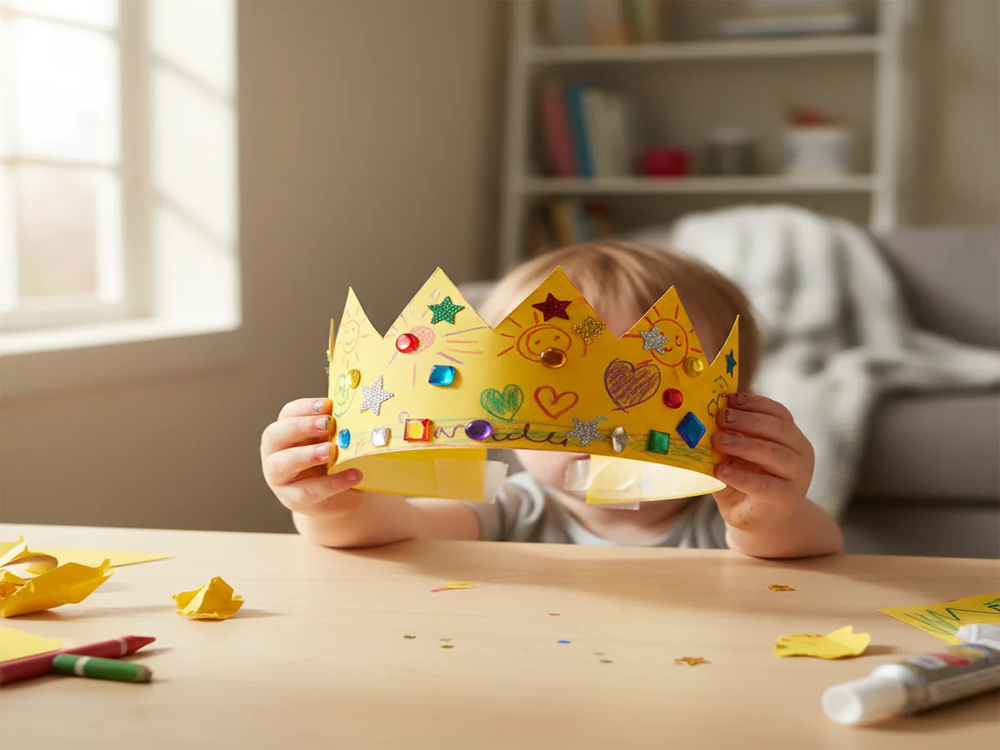
7. Torn Paper Mosaic Art
No scissors needed for this one! Kids tear colorful paper into small pieces and glue them onto a simple outline like a heart, star, or butterfly. It's wonderfully forgiving since there's no "wrong" way to do it. This is one of the best creative paper crafts for little hands because the tearing itself is half the fun.
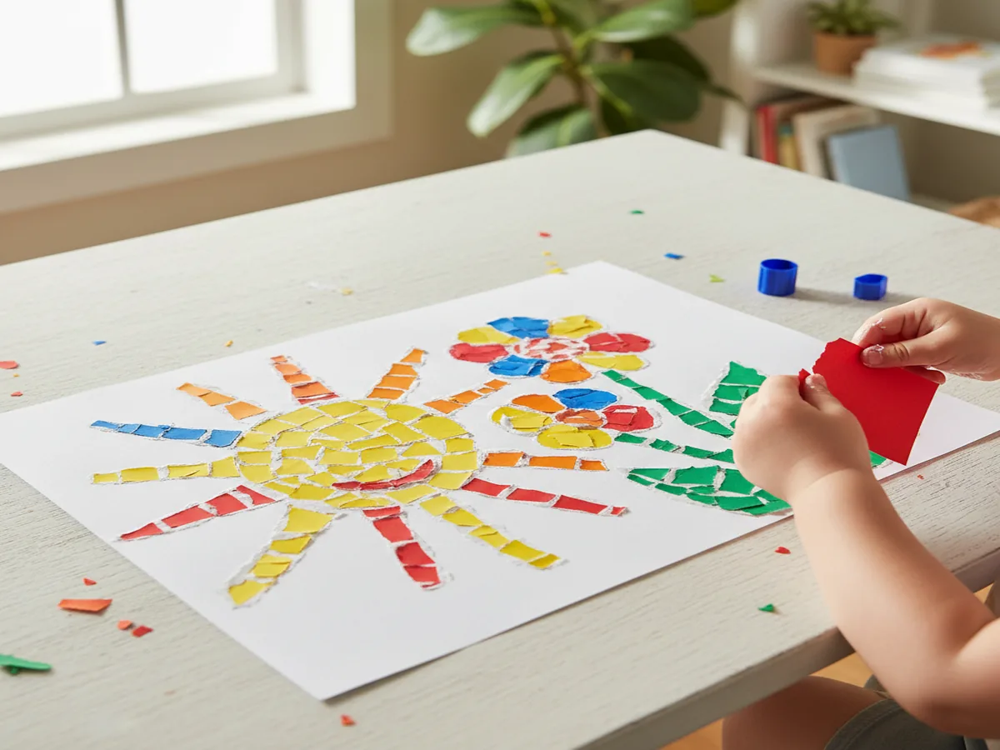
8. Paper Fan Fish
Fold a piece of paper into an accordion fan, pinch one end together, and fan out the other side to create an adorable fish shape. Add an eye and some fins, and you've got an ocean buddy. Kids love making a whole school of colorful fish to display on the wall!
9. Paper Circle Ladybug
Using just circles of red and black paper, kids can build the cutest ladybug you've ever seen. Fold the red circles in half for wings and add black dots with a marker. It's a great way to introduce basic shapes while making something adorable. These fun paper crafts for preschoolers always get big smiles.
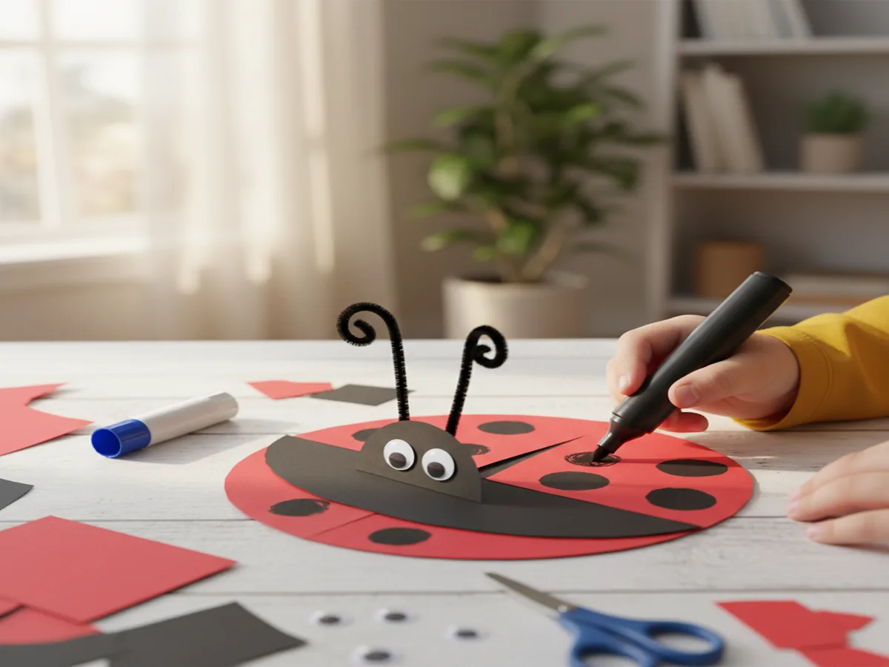
10. Paper Airplane Challenge
A classic for a reason! Show your little one a simple fold pattern and then head outside (or down the hallway) for a flying contest. Try different designs and see which one goes the farthest. This is a wonderful way to sneak in a little science talk about air and distance.
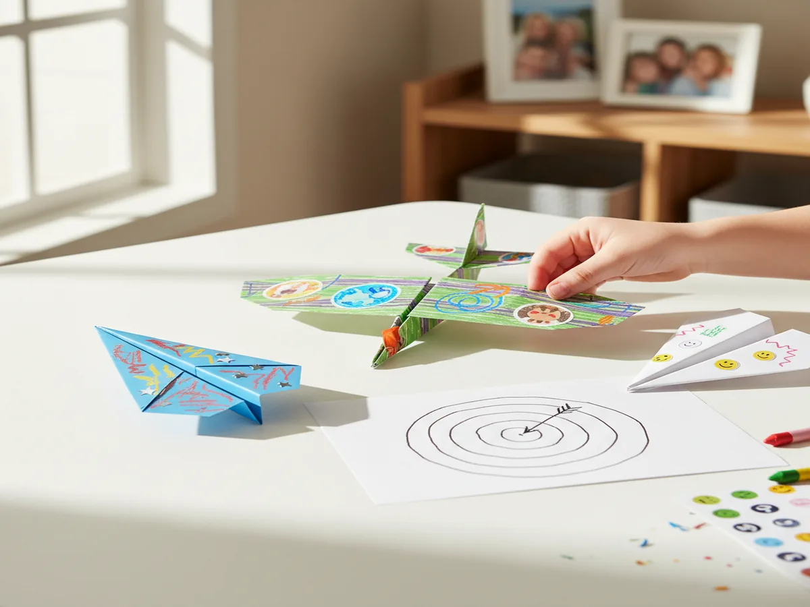
11. Paper Strip Jellyfish
Start with a paper bowl or half circle for the body, then attach long, curly paper strips as tentacles. Curl the strips by wrapping them around a pencil for extra bounce. Hang these from the ceiling and watch them dance in the breeze. Kids are mesmerized every time!
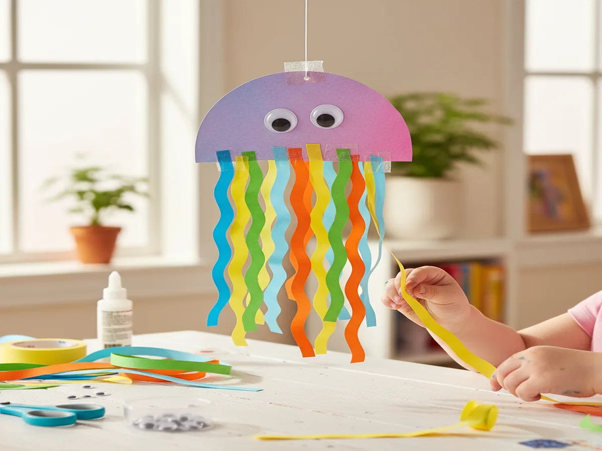
12. Folded Paper Flowers
These simple flowers are made by folding and cutting circles of paper, then layering them together. Add a green paper stem and a leaf, and you've got a bouquet that lasts forever. They make perfect gifts for grandparents. Your child will beam with pride handing over their handmade flowers!
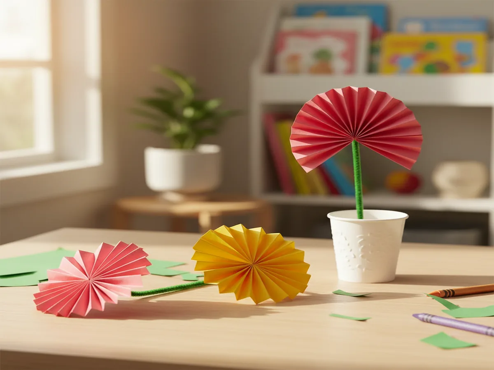
13. Paper Roll Binoculars
Two toilet paper rolls taped together and decorated with colorful paper become the coolest binoculars ever. Kids love taking them on "nature walks" around the backyard or even around the living room. Add a string so they can wear them around their necks. The imaginary adventures that follow are priceless!
14. 3D Paper Caterpillar Headband
Create a strip headband and attach a row of colorful paper circles that stand up from the top. Add antennae with little pom-pom tips and a smiley face on the first circle. It's wearable art that kids absolutely adore. These kinds of cool paper crafts keep the creative play going long after the glue dries.
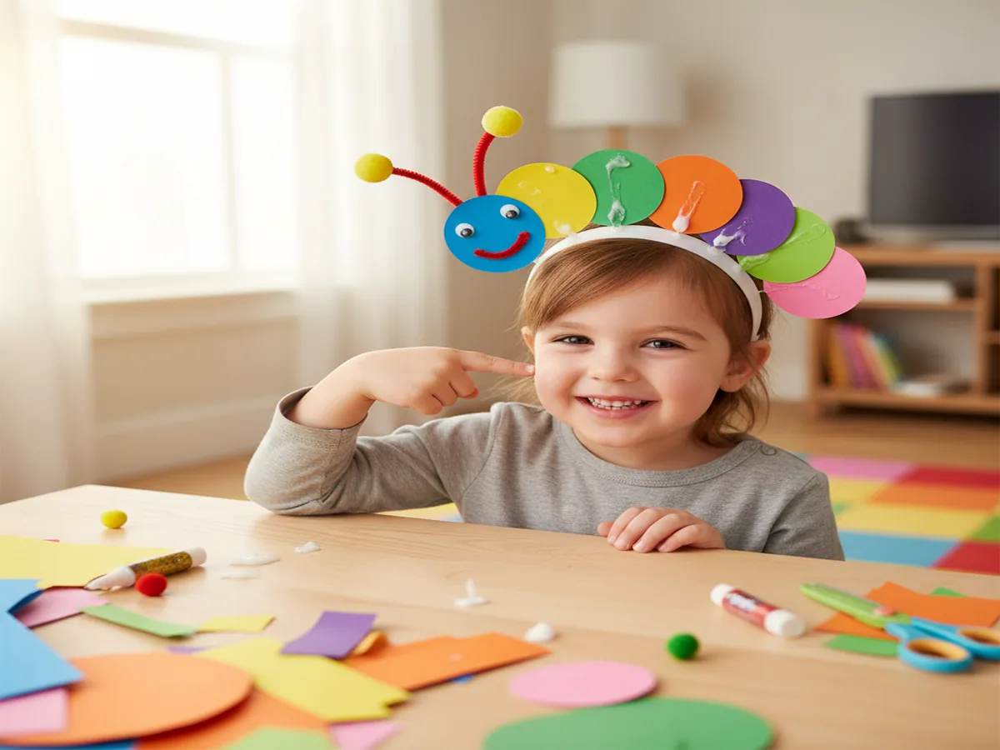
15. Paper Weaving Mats
Cut slits in one piece of paper and weave strips of another color through them to create a colorful mat. This classic craft teaches pattern recognition and patience in the most satisfying way. Use it as a placemat for snack time and watch your kiddo glow with pride!
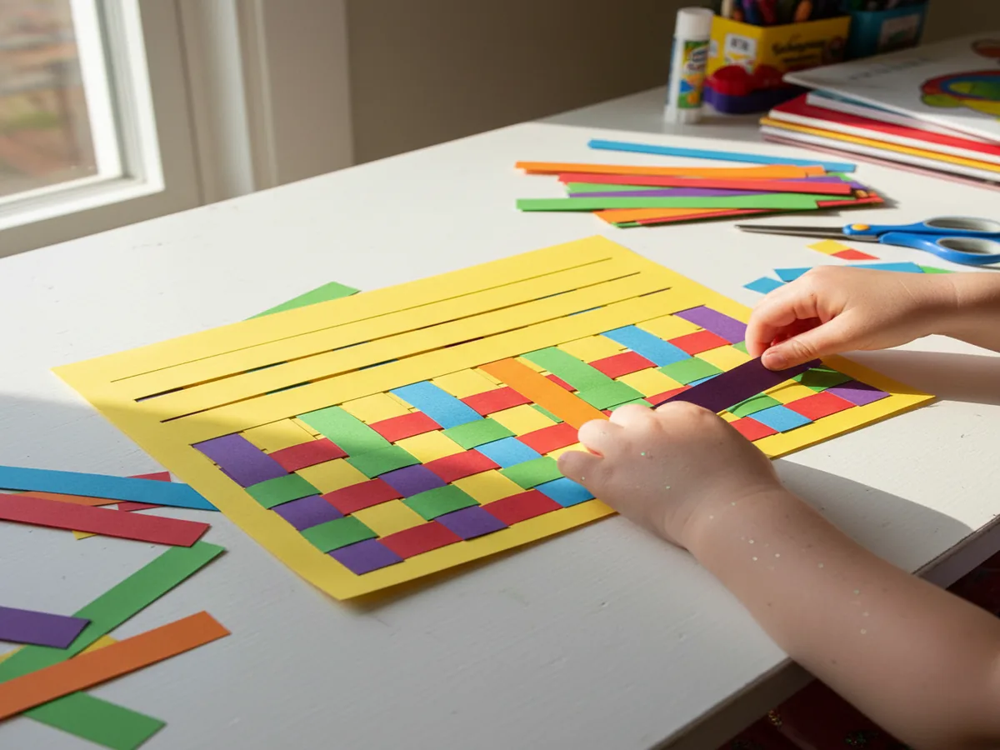
16. Paper Cactus Garden
Cut cactus shapes from green paper, fold them in half, and glue several together to make a 3D cactus. "Plant" them in a small paper cup filled with crumpled brown paper as dirt. Kids can add tiny paper flowers on top for extra color. It's a desert garden that never needs watering!
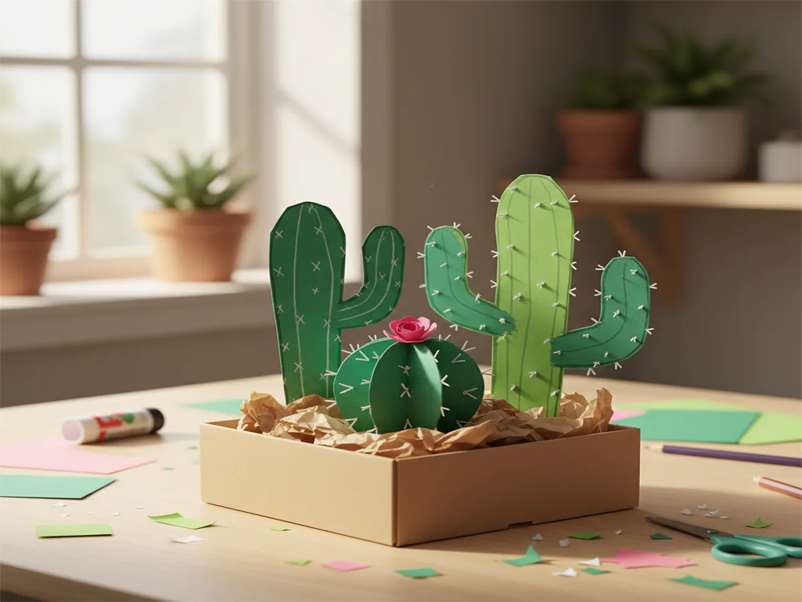
17. Easy Paper Bookmarks
Fold a square of paper into a corner bookmark, then decorate it as a monster, animal, or favorite character. These are simple enough for little crafters but cool enough that older siblings will want one too. They make wonderful gifts for friends and teachers. Reading just got a whole lot more fun!
18. Paper Handprint Wreath
Trace and cut out lots of little handprints in seasonal colors, then arrange them in a circle on a paper plate ring. This is a gorgeous keepsake that works for any holiday or season. It's one of those simple paper art projects for kids that looks way more impressive than it actually is to make!
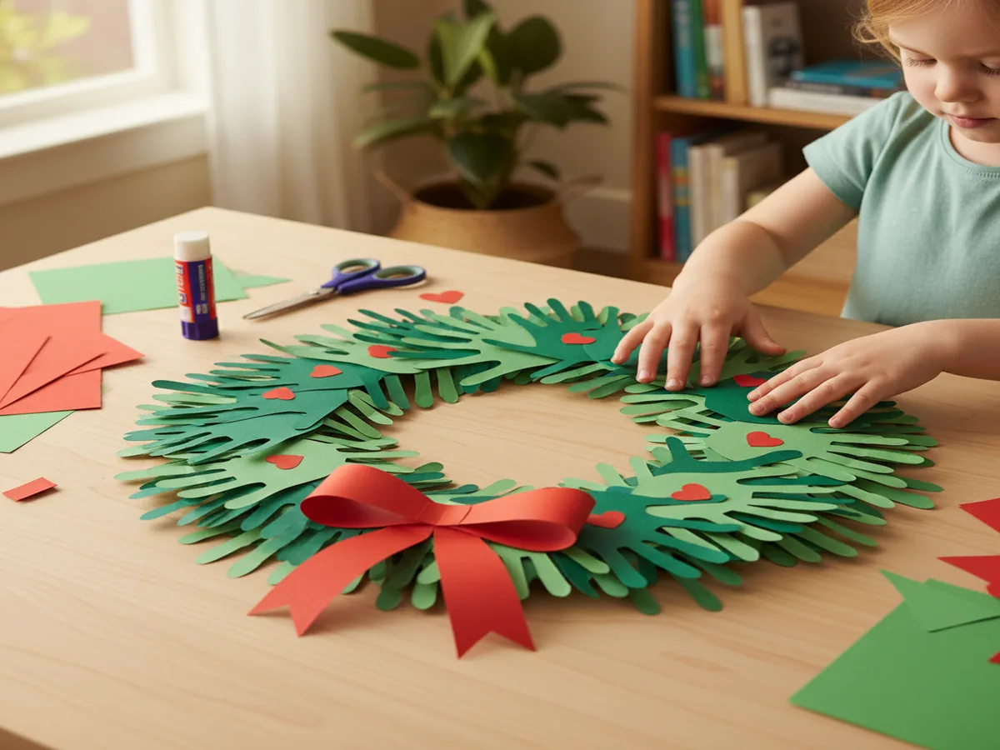
19. Paper Ice Cream Cone
Roll a piece of tan or brown paper into a cone shape, then top it with colorful crumpled tissue paper "scoops." Add paper sprinkles for extra sweetness. Kids can make their dream flavor combinations. This one is almost too cute to believe it's made from paper!
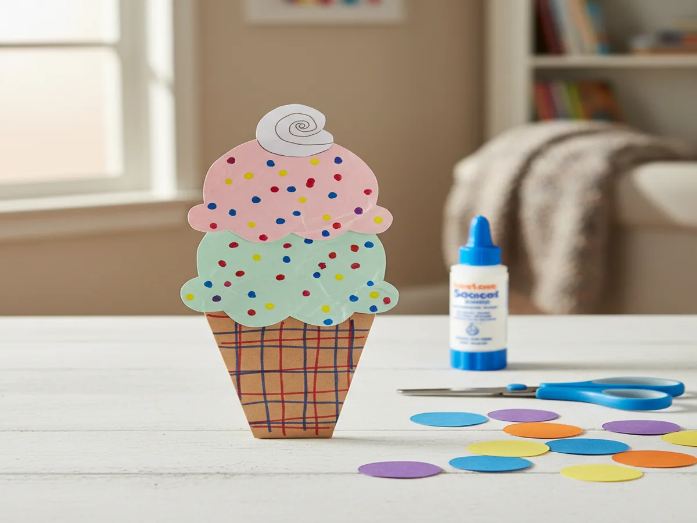
20. Paper City Skyline
Cut rectangles of different heights from dark paper and glue them along the bottom of a blue or black background. Add tiny yellow squares for windows, and you've got a stunning city at night. Kids can add a paper moon and stars to complete the scene. This makes a fantastic bedroom decoration!
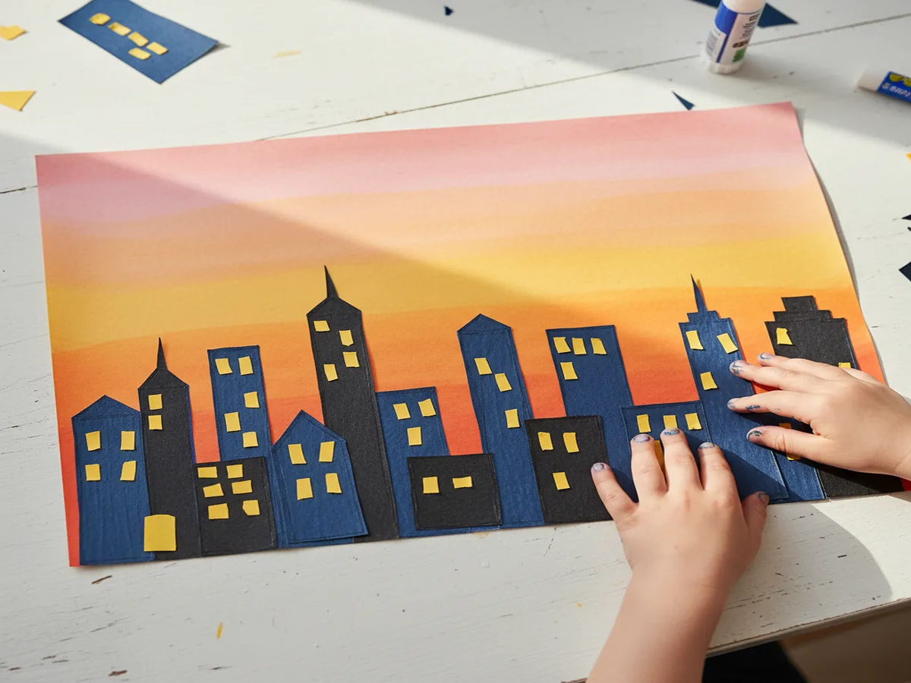
21. Paper Plate Lion
A yellow paper plate becomes a lion face, and strips of orange paper folded or curled around the edge make the mane. Add a cute face with markers and your little one has their very own jungle king. The mane is so much fun to create because every strip adds more personality!
22. Paper Spinner Toy
This simple spinning toy is made by threading a string through two holes in a decorated paper circle. Wind it up and pull to watch the colors blur together. Kids are amazed by the optical illusion. It's one of those cool paper crafts that feels like a magic trick!
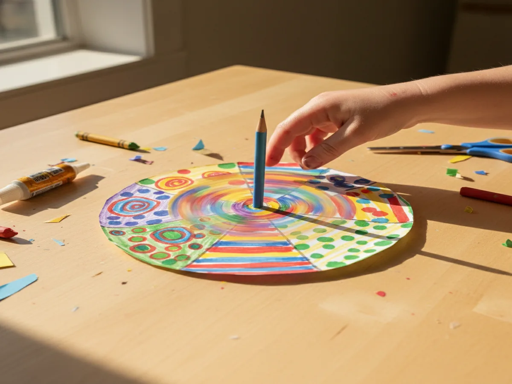
23. Paper Frog Jumper
Fold a small piece of green paper into a frog shape with a special back fold that makes it actually jump when you press down. Kids can have frog races across the table and see whose frog leaps the farthest. It's amazing how much excitement a tiny paper frog can create!
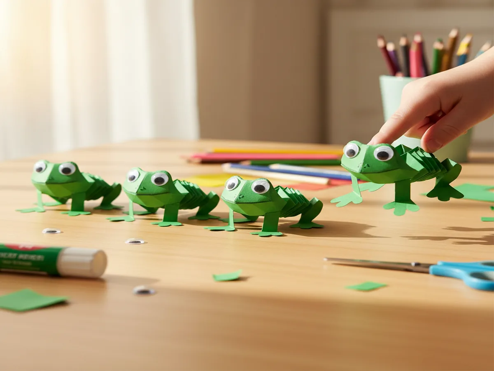
24. Paper Octopus
Roll a piece of paper into a tube for the body, then cut the bottom into eight strips and curl them for tentacles. Decorate with a goofy face and colorful spots. This craft is super quick and the curly legs give it so much character. Pair it with the jellyfish from earlier for an ocean-themed afternoon!
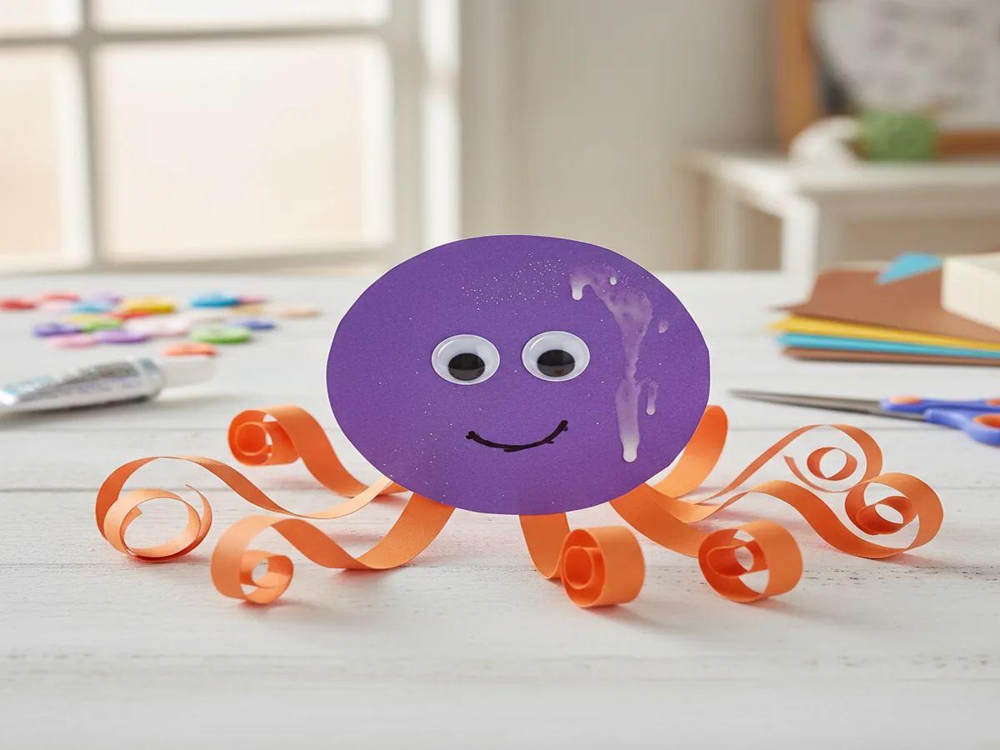
25. Paper Fortune Teller
This nostalgic folded paper game is just as magical now as it was when we were kids. Help your little one fold the classic shape, then fill it with silly fortunes, colors, and numbers. Older preschoolers and early readers especially love playing this with friends and family. It's the perfect way to wrap up this list of cool paper crafts for kids!
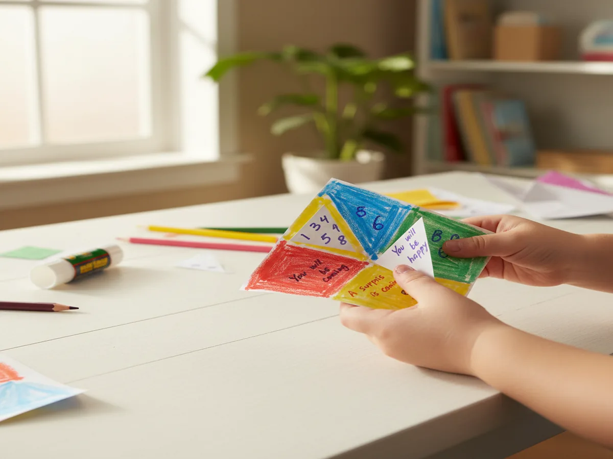
More Crafts You'll Love
If your little ones can't get enough of paper crafting, here are a few more of our favorite tutorials to try next:
- Magical Snowflake Paper Craft for Kids – Easy Winter Fun They'll Want to Make Again and Again!
- 15 Adorable 5 Minute Crafts with Paper Easy Enough for Toddlers and Preschoolers
Final Thoughts
We hope this list of cool paper crafts gave you plenty of inspiration for your next crafting session with your little ones. Remember, it doesn't have to be perfect to be absolutely wonderful. Enjoy every messy, giggly, glue-covered moment together, and happy crafting from our family to yours!